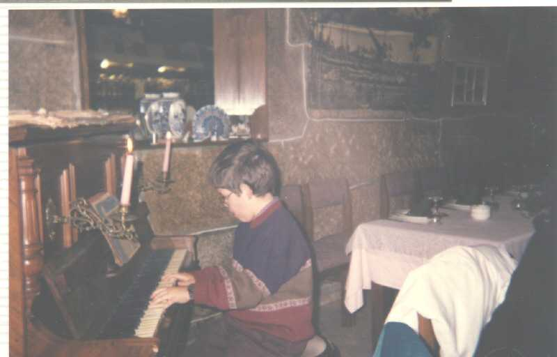

Luís Miguel Morais Torres was born in 11/06/1981 how it shows the picture here behind, and he showed superior capacities very early.
In January 1983, he started to play tenis, quiting few years later to give more excitment to this sport.
In 1986, he designed his first version of MS-DOS with his spectrum, and sold the author rights to Bill Gates
At the same year he played soccer as a goal keeper, joining Milan where he won the scudetto and the golden Ball of France Football.
In 1989, he played basketball, and he was responsiblke for the most expensive transfer of portuguese basketball (he left FC Porto, joining LA Lakers for 375 000 million dolars)
.

In the US he met with another sport, the american football. There, playing in Dallas Cowboys team, he won the 1990 Super Bowl.

After these years in the states, he came back to Portugal where he started a swimming carrier, but a disagreement with the national team coach, made him retire from this sport refusing to go to the 1992 Olympic Games in Barcelona.
So, he returned to the computers, designing games and later the Windows 95 for his friend of ever Bill Gates.

In free time he has made a world tour as a musician, selling millions of CD's from Alaska to New Zeland, stopping in Mongolia and in Burkina Faso.

1994 was his first year in handball, sport that he still practices, winning the sub 13 regional title and the third place in sub 15 national championship in 1995/96 season.

In the Winter, he skies, after winning the world cup of 1995 and 1996 ending the kingdom of Alberto Tomba.

In August 1996 he design his first html page about his Hollidays in Mallorca .
In December 1996 he openned his official homepage, which you are reading.
 here to go back.
here to go back.